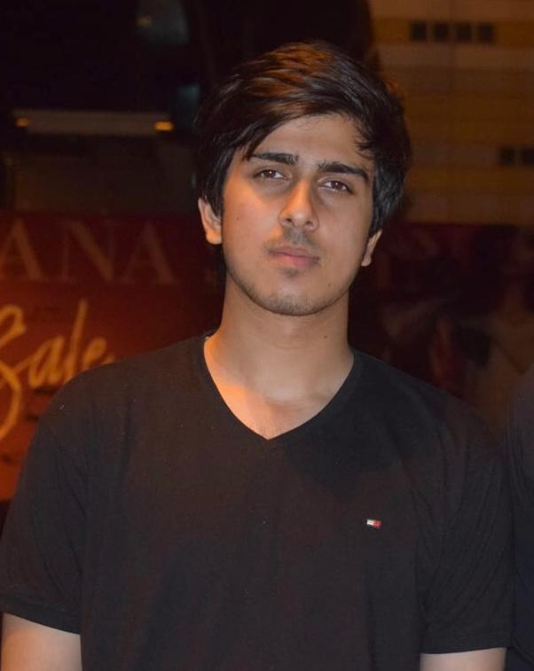

|  | Permanent Address:
House no.68, G-15/1, Islamabad
Phone Number: 0336-5959062 Email: dawoodwasif1@gmail.com |
| Objective |
Highly skilled support professional offering versatile office skills like data analysis, data entry, data mining, full stack web developing and designing working with both front and back ends, and other technical and writing skills. |
| Academic Qualifications |
2019-2023 National University of Science and Technology, H-12, Islamabad
2017-2019 Beaconhouse Margalla Institute, H-8, Islamabad
2008-2017 Beaconhouse School System, Wah
|
| Working Experience |
Idependent Freelancer (2 year, 4 months) Working primarily as a Full-Stack Developer Duration: From 1 May, 2018 - to current date ALongside web-development I have worked as a content-writer, video editor, programmer etc. PayDoc, Karachi (6 months) Working as a Data Entry Operator Duration: From 10 Nov, 2018 - 9 May, 2019 Responsible for entering data into different computer databases, manage and maintain effective record keeping |
| Projects and Certifications |
Certifications Achieved Artificial Intelligence by Presidential Initiative of Artificial Intelligence and Computing The Complete Full-Stack Web Development Bootcamp by Udemy Python MTA 98-381 by Microsoft passed with 93% marks Projects Completed TrackFace: A C and MATLAB based program which keeps track of your eye position while driving HealthCare:A healthcare management system usable on a large scale Dog Adoption, Biographical, Shopping System and many more Websites |
| Skills and Tools Expertise | Coding Languages Softwares |
Python C/C++ Java MATLAB Arduino ModelSim |